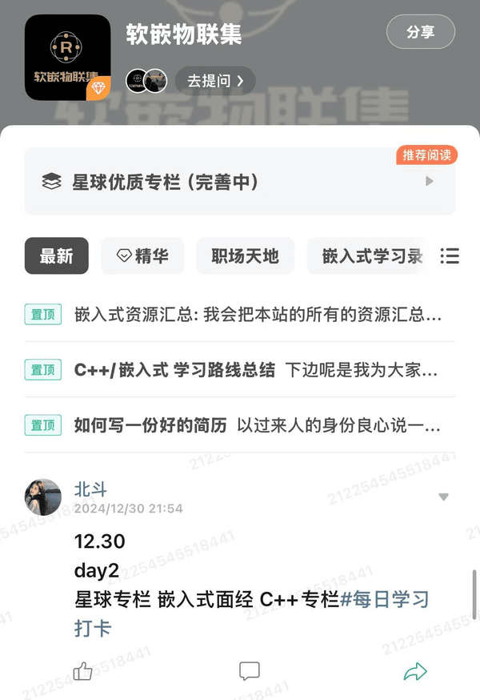
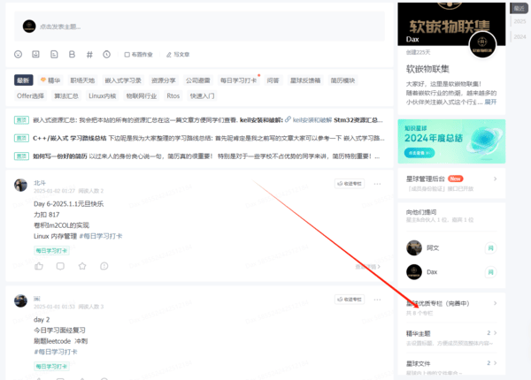

软嵌物联集星球概述
随着情投意合的小伙伴的加入,软嵌物联集的团队也渐渐大了起来。非常感谢小伙伴们的认可和帮助。
接下来我来介绍一下星球的概况
PC端界面
APP端界面
建议同学们用PC端访问，这样的阅读效果最好。建立星球的初衷是消除专业壁垒，扫清知识盲区毕竟方向不对，努力白费。
现在星球处于试运行阶段，尽可能给大家提供最完善的学习环境，让你只在学习中花时间不浪费其他时间
***现在星球试运行阶段免费加入***
我觉得大部分人智商都差不多,别人能学会的你也能学会,只要肯投入时间
但是往往一个人自学是枯燥的,我也希望大家可以在星球浓厚的学习氛围中坚持学习,各自顶峰相见
现在介绍一下星球的几大模块组成
学习路线
学习路线模块旨在为同学们指明学习方向。我们都知道不同的岗位方向不同路线肯定也会存在区别，真想只搞单片机你就不必要深学C++，想搞QT就不必学到驱动，
一千个人有一千条路
具体学习路线会放在置顶链接
所以这里作者给出的路线可能是通用技能学习路线，比如C/计网/硬件基础之类的,同学们有其他的需求可以直接提问我
简历指导
对于简历，我在牛客上已经帮很多牛友改过形形色色的简历，不论是技术的还是非技术的，阅历无数
在这呢我也给读者们总结了一份通用简历模板和注意事项。
当然千人千面，每个同学都可以在简历模块提问，每一个同学的提问我都会回答。

Offer 选择
在拿到多个Offer时，很多喜欢集邮的同学选Offer犯了难，毕竟拿N个offer但你也只能去一家公司。这家给的N多，那家背书大title高
另一个岗位前景好，到底选择那个？别担心我们来给你建议。
我单独设立一个Offer选择的模块专区给同学们解答问题。
后续我会把简历的模板会单独给不同的同学出不同的简历书写注意事项。
*****待补充*****
嵌入式最全面经
面经打造也是我们星球的重中之重，旨在让同学们在面试的时候不会因为基础面经而挂掉，面经这块也是我一直在完善
星球面经专栏模块
包含以下几个面经
- 嵌入式专栏面经
- C++专栏面经
- Linux驱动面经
- 嵌入式软件场景实战题专栏
- 算法基础专栏
加入方式
加我微信可以免费加入知识星球